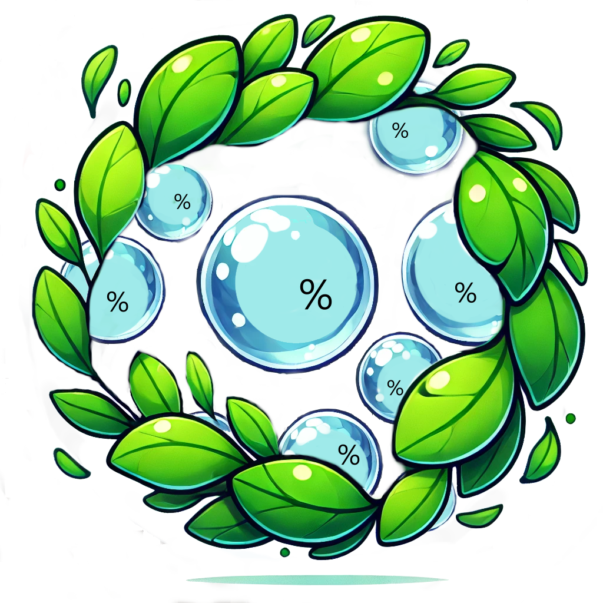

A 100% community-governed ESG ETF. BCI will adopt a dynamic asset selection system, based on the votes of Index Coop members and the DAO.
📋 Crypto Selection Criteria

🔹 Selection methodology: Assets will be screened according to ESG criteria defined by the community (e.g. carbon footprint, PoS, governance audit).
🔹 Update Process: Every 3 or 6 months, a vote by the DAO will determine which assets should be added or removed
📅 📌We propose to initiate a discussion phase to refine ESG criteria and establish a clear community governance process before launching the index. We invite the DAO Index Coop to share its suggestions for finalizing this model and ensuring a product aligned with the community's values
💡 Invest in Sustainable Assets
BubbleChain Index allows you to integrate sustainable finance into crypto investing.